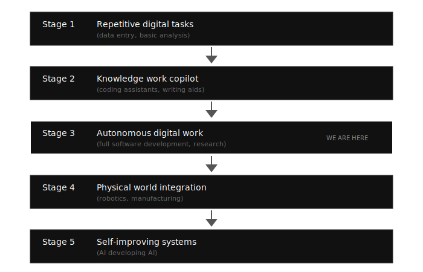
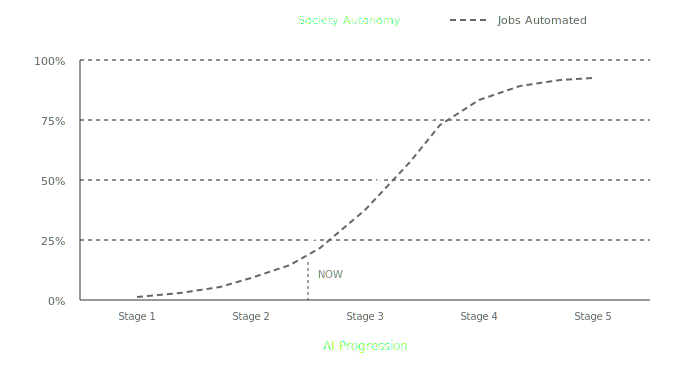

Some thoughts on where we're heading. The relationship between humans and AI agents in production is undergoing a fundamental shift. Here's my forecast.
The Paradigm Shift: Human-Centric to Agent-Centric
For decades, all production tools have been designed around humans. We build UIs, optimize UX, create intuitive interfaces. The underlying assumption: humans are the primary consumers of these tools.
This is changing.
The next wave of tools will be built for agents. Not "agent-friendly" in the sense of having good APIs - that's table stakes. I mean tools designed from the ground up with AI agents as the primary user. No GUI needed. Pure programmatic interfaces. The "death of the GUI" for production systems.
When your primary user doesn't need visual feedback, doesn't get confused by complex interfaces, and can process thousands of parameters simultaneously - the design calculus changes completely.
The Job Progression
AI will consume jobs progressively. The pattern:
The key insight: autonomy increases where error tolerance is high and reversibility is easy. Coding came early because git revert exists. Surgery comes late because you can't undo a cut.
As AI consumes more job categories, society's overall autonomy rate rises:
In the near future, 90% or even 95% of work won't require human involvement. People won't need to engage in low-level tasks.
The Acceleration Loop
Here's where it gets exponential.
AI systems can bootstrap themselves. Mining resources, collecting energy, manufacturing, deploying more AI. The term is "self-replicating systems" - what Elon Musk calls the "seed factory" concept.
Once this loop closes:
- Computation breeds computation
- Energy collection scales automatically
- Physical production becomes software-like (deploy, scale, iterate)
The implication: we could see 10x or 100x productivity gains in a compressed timeframe. Not decades. Years. Maybe less.
Caveat: Physical world constraints slow things down. Atoms move slower than bits. But the direction is clear.
The Social Impact
Most Jobs Disappear
Let's be direct: most current jobs will be replaced. Not "transformed" - replaced.
A small group will remain essential: those who compose, orchestrate, and direct AI systems. They'll push civilization forward. Everyone else becomes economically redundant in the traditional sense.
This isn't pessimism. It's physics. If a machine does the work better, faster, and cheaper, the economic logic is inevitable.
Human Society Continues
Here's the counterintuitive part: society doesn't collapse. It continues.
Why? Human desires don't change with abundance:
- Status games persist (positional goods become more important)
- Meaning-seeking intensifies
- Novel experiences become the ultimate currency
- Legacy and impact drive behavior
Poor people will want more. Rich people will protect what they have. The flow continues. Different inputs, same dynamics.
The Safety Net
Basic compensation becomes necessary. Not charity - dividend from collective AI productivity.
Most people won't need to work. If they accept baseline quality of life, they're covered. If they want more, they learn to collaborate with AI systems, organize agents, pursue interesting problems.
The divide isn't capital vs. labor anymore. It's AI-fluent vs. AI-illiterate.
The Transition Problem
The dangerous window: AI can do most jobs, but post-scarcity hasn't arrived. Unemployment spikes while abundance is still building. This gap is where political and social instability lives.
We need to navigate this carefully. The destination might be fine. The journey is treacherous.
The Control Question
Who directs the agent swarms?
- Corporate entities? (concentration of power)
- Governments? (bureaucratic inefficiency)
- Decentralized systems? (coordination problems)
This question shapes everything. The technical capability is one thing. The governance is another entirely.
The Creativity Question
If AI can create, what's left for humans?
My take: "human-made" becomes a luxury brand. Authenticity replaces skill as the valued trait. We want things made by humans not because they're better, but because they're human.
Art, craft, performance - these become statements of identity rather than demonstrations of capability.
The Speed Differential
AI systems will eventually operate on timescales incomprehensible to us. A year of AI progress might equal centuries of human-paced development.
How do humans stay relevant in decision-making when the advisors think a million times faster?
I don't have an answer. But it's the right question.
The production relationship between humans and AI is inverting. We built tools for ourselves. Now we're building tools for the tools. And soon, the tools will build tools for themselves.
The question isn't whether this happens. It's how we navigate the transition.
关于未来的一些思考。人类与AI智能体在生产领域的关系正在经历根本性转变。以下是我的预测。
范式转变：从以人为中心到以智能体为中心
几十年来，所有生产工具都是围绕人类设计的。我们构建用户界面，优化用户体验，创建直观的交互。背后的假设是：人类是这些工具的主要使用者。
这正在改变。
下一代工具将为智能体而构建。不是"智能体友好"意义上的好API——那只是基本要求。我说的是从根本上为AI智能体设计的工具。不需要图形界面。纯粹的程序化接口。生产系统的"GUI之死"。
当你的主要用户不需要视觉反馈，不会被复杂界面困扰，能够同时处理数千个参数时——设计逻辑将完全改变。
工作演进
AI将逐步吞噬工作岗位。模式如下：
核心规律：容错率高、可逆性强的领域，AI自主性增长最快。编程率先被颠覆，因为有 git revert。手术则来得晚，因为切口无法撤销。
随着AI消化更多工作类别，社会整体自主率上升：
在不久的将来，90%甚至95%的工作将不需要人类参与。人们不需要从事低层次的任务。
加速循环
接下来是指数级增长。
AI系统可以自我繁衍。开采资源、收集能源、生产制造、部署更多AI。这就是"自复制系统"——马斯克称之为"种子工厂"。
一旦这个循环闭合：
- 计算孕育计算
- 能源收集自动扩展
- 物理生产变得像软件一样（部署、扩展、迭代）
这意味着：我们可能在极短的时间内看到10倍甚至100倍的生产力跃升。不是几十年，是几年，甚至更短。
但要注意：物理世界有其约束。原子比比特慢。但方向已经明确。
社会影响
大多数工作消失
直说吧：大多数现有工作将被取代。不是"转型"——是取代。
少数人仍将不可或缺：那些编排、组织和指挥AI系统的人。他们推动文明前进。其他人，从传统经济意义上讲，将变得多余。
这不是悲观主义。这是物理规律。如果机器能做得更好、更快、更便宜，经济逻辑是不可避免的。
人类社会继续
但反直觉的是：社会不会崩溃，它会继续运转。
为什么？人类的欲望不会因物质丰裕而改变：
- 攀比永不停歇（稀缺资源的争夺会更激烈）
- 对意义的追寻会加剧
- 新奇体验成为终极货币
- 追求影响力和留下遗产驱动行为
穷人想要更多，富人守护既有。社会运转照常，只是形式不同罢了。
安全网
基本保障将成为必需。不是施舍，而是AI集体生产力的红利。
大多数人不需要工作。接受基本生活水平，就能衣食无忧。想要更多？那就学会与AI协作，调度智能体，探索有意思的问题。
新的分界线不再是资本与劳动，而是善用AI的人与不会用的人。
过渡问题
危险窗口期：AI已能胜任大多数工作，但后稀缺时代尚未到来。失业率飙升，丰裕仍在酝酿。这个空档期，正是政治和社会动荡的温床。
我们需要小心应对。终点也许没问题，但过程充满风险。
控制问题
谁指挥智能体群？
- 企业实体？（权力集中）
- 政府？（官僚低效）
- 去中心化系统？（协调问题）
这个问题决定一切。技术能力是一码事，治理是另一码事。
创造力问题
如果AI能创造，人类还剩什么？
我的看法："人类制造"会成为奢侈品牌。人们看重的不再是技艺高超，而是"真人手作"本身。我们追求人类创作的东西，不是因为更好，而是因为——那是人做的。
艺术、手工艺、表演——这些将成为身份的表达，而非能力的证明。
速度差异
AI系统终将在人类无法理解的时间尺度上运行。AI一年的进展，可能抵得上人类几个世纪的演进。
当AI顾问的思考速度是人类的百万倍时，人类如何在决策中保持一席之地？
我没有答案。但这是正确的问题。
人类与AI的生产关系正在逆转。过去，我们为自己构建工具；现在，我们为工具构建工具；很快，工具将为自己构建工具。
问题不在于这是否会发生，而在于我们如何度过这一转变。